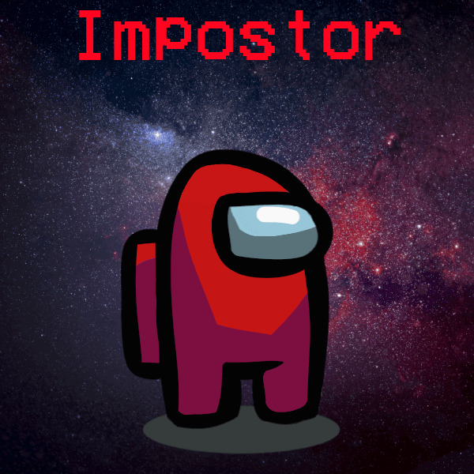
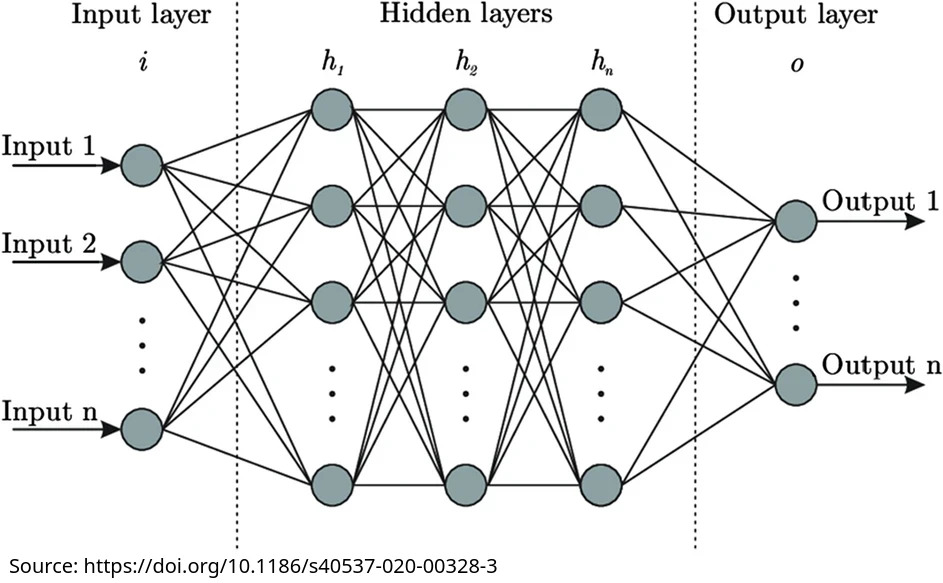

https://savethevowels.org/talks/cssa2025.html
I’m an Associate Teaching Professor of Linguistics
I’m a Computational Phonetician
I’ve also done Natural Language Processing work
I work to develop new tools for measurement and teaching
We’re an interdisciplinary program uniting people across Social Science who work with and care about computation and data
We believe that data matters because people matter
I’m here because I’m always thinking about computers as a tool for understanding humans!

I have my BA, MA and Doctorate in Linguistics from the University of Colorado at Boulder
CU Boulder had the Institute of Cognitive Science
I went to their talks and was advised by an affiliate, but there was not a COGS major or Ph.D Specialization
Speech is even cooler than Language
… and all the more awesome when we put computers into the process
Siri/Alexa/GoogleAssistant
ChatGPT Voice Mode
Speech-to-Text Keyboards
Text-to-Speech (e.g. in GPS or Twitch streams)
… and much more!
Why is speech so hard to produce?
How can computers produce speech?
Why is speech so hard to perceive?
How can computers perceive speech?
This is an incredibly intricate gestural dance in your mind and mouth
Let’s try it
First, focus on your jaw
Now, on your tongue
Now, feel the vibes
Fluid movement of your mouth and tongue
Careful planning of air and breathing
Control of pitch, gestures, and other aspects
All to create tiny pressure variations in the air

‘Speech Synthesis’ or ‘Text-to-Speech’ (TTS)
How do we do that?
“A Linguistics major goes very well with Cognitive Science”
Concatenative or ‘Unit Selection’ TTS chops up bits and pieces of existing speech to create new speech
You record a huge database of speech from a voice actor, with optimum ‘coverage’
You then combine these words into sentences to match the text


Training involves presenting the network with both input and output
Then you feed in new input, and get new output
They are wildly complex, and wildly powerful
Take COGS 181 to actually understand this!
For now, we input text, we get speech
It’s trained using speech with paired text
It takes text, and generates spectrograms, chunk-by-chunk, which can be turned into a waveform

We feed in text, and we get back a wave, with no humans involved past making training data!
State-of-the-art models are getting very, very good!
You can build a model from the ground up using any voice you’d like
If all your training data are from a bored Bostonian, you’ll end up with a bored Bostonian TTS voice
Yet, we might want different voices…
All human beings are born free and equal in dignity and rights. They are endowed with reason and conscience and should act towards one another in a spirit of brotherhood.

(TacoTron2)
(ElevenLabs)
(Credit to Erick Amaro and Mia Khattar!)
(English)
(French)
(Spanish)
(Mandarin)
(Italian)
(Russian)
(Japanese)
… and it’s never had a tongue, had phonics training, and doesn’t actually know anything at all about mouths
Arguably, it doesn’t know anything about English
This is amazing!
It’s like sometimes mezclo un poco de español con my English, cuando me siento particularmente spicy, y tengo curiosidad to know cómo la TTS handles it.
Not only can exposure to data allow a deep neural network to learn to map written language into speech in one language
… but it can do it for two languages
… at once
… with clear mixing of the two
Espicy!
Speech is flapping bits of meat around in your head and throat while you expel air.
This creates tiny vibrations in the air
Speech perception is turning the resulting vibrations in the air back into language
A vowel is letting the voice resonate in the vocal tract while you move the tongue
If we change the position of the tongue, we change the resonances

/i/ - beet, see, seen, sear, seal
/ɪ/ - bit, sit, tin, sill
/ɛ/ - bet, set, sent, fair, sell
/æ/ - bat, sat, pant, pal
/ʌ/ - but, sun, pun, lull (ə in sofa, amount)
/əɹ/ - bird, purr, earl, butter, clamor (this is often broken into two vowels!)
/ɑ/ - bot, saw, star, paul, pawn, (cot*)
/ɔ/ - corn /kɔɹn/, boy /bɔj/ (caught*)
/ʊ/ - book, hood, puss
/u/ - boot, who’d, loose, lure, loon
/ɔj/ - boy, soy, toy, join, oil, Roy
/aj/ - buy, right, try, sigh, die, fire
/ej/ - play, bay, may, ray, lay, trail
/ow/ - boat, oat, wrote, pope, toll
/aw/ - how, now, brown, cow, prow, louse


We talk about vowel quality in terms of “formants”
These are bands of the spectrum where the energy is strongest
The frequencies of these formants are how we distinguish vowels


 Different
American English vowels, as spoken by a male speaker
Different
American English vowels, as spoken by a male speaker
Different speakers produce different resonances, even for the “same” vowels
Different speakers have different formants, even for the “same” vowels!
Every person has a different set of basic vowel formant positions


Even the same speaker will have variation from moment to moment
We often move our tongues differently, changing the vowel’s quality
This leads to constant and massive changes in vowel production


We feed the system lots of text, and lots of corresponding audio
It learns the patterns of sound associated with a given text
Some use language models to give better predictions
Around the turn of the century, ASR software required personalization and ‘training’
Setup began with “Read these texts aloud”
The model simply wouldn’t work without this level of customization

It works relatively quickly
On relatively low-end hardware
… and most amazing of all…

These ASR tools just ‘listened’ to a bunch of audio with texts
They built representations of speech
They combined it with some knowledge of how text usually looks
… and suddenly, it approaches human ability in speech perception*
How many think it’s OK?
How many think it works terribly?
… but they’re substantially weaker at adapting to different dialects
Many people are working on that
So, humans still win!

Yet, there’s still one incredible fact…
… without tongues, ears, grammatical knowledge, or human brains
Just like LLMs are the second thing ever which can do human language
All it takes it lots of data and the right architecture
… and to have a Linguistics double major
(Sorry, couldn’t resist)